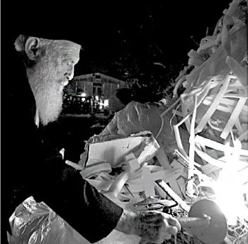
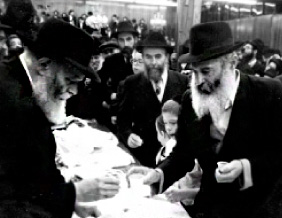

בתדהמה רבה התקבלה השמועה על פטירתו של הרה”ח ר’ זושא ריבקין ע”ה, מהדמויות המיוחדו
בתדהמה רבה התקבלה השמועה על פטירתו של הרה”ח ר’ זושא ריבקין ע”ה, מהדמויות המיוחדות ביותר בקרב חסידי חב”ד, שזכה לקירובים רבים מהרבי מה”מ, והיה ללפיד מהלך של אמונה יוקדת בביאת המשיח ובהתגלות הרבי כמלך המשיח. כל חייו היו קודש לעשיית צדקה וגמילות חסד לצד החדרת והפצת האמונה בגאולה האמיתית והשלמה, כאשר השי
בתדהמה רבה התקבלה השמועה על פטירתו של הרה”ח ר’ זושא ריבקין ע”ה, מהדמויות המיוחדות ביותר בקרב חסידי חב”ד, שזכה לקירובים רבים מהרבי מה”מ, והיה ללפיד מהלך של אמונה יוקדת בביאת המשיח ובהתגלות הרבי כמלך המשיח. כל חייו היו קודש לעשיית צדקה וגמילות חסד לצד החדרת והפצת האמונה בגאולה האמיתית והשלמה, כאשר השיא מבחינתו היה מאמציו להקים את ארמון המלכות לרבי מה”מ * בכו להולך, הזילו דמעה ללפיד האמונה שכבה בשיא בעֵרתו

ביום ראשון י”ז באדר בלילה, על אף שעת הלילה המאוחרת, מאות תושבי כפר חב”ד ליוו למנוחות את ר’ זושא ע”ה, שהלך לעולמו ולא הותיר אחריו ילדים.
מיטתו הוצבה ליד ארון הקודש בבית הכנסת ‘בית מנחם’ שר’ זושא זכה להיות ממקימיו, והקהל הרב ענה “אמן” לקדיש אותו אמר רבו של הכפר הרב מרדכי שמואל אשכנזי. לאחר מכן הכריזו כולם יחדיו את הכרזת הקודש “יחי אדוננו”, איתה “חי” ר’ זושא בכל רגע מחייו.
איש לא האמין שר’ זושא, שבאותו בוקר עוד טבל במקווה שבנה ב”בית מנחם” התפלל שחרית והשתתף בשיעור תורה קבוע, הסתלק כך לפתע פתאום. צמד המילים “זושא ריבקין עליו השלום” פשוט לא נתפס ולא מתחבר.
ר’ זושא היה סמל של להט ושל אמונה בוערת בלתי פוסקת. זו – ולא במליצה – קרנה מתוך עיניו, ולבו היה ספוג ברגש של ציפייה עזה להתגלות הרבי מלך המשיח. כל מי שנפגש עמו, היה נשאל על ידו מתי יתגלה המלך המשיח, ואצלו לא היו הדברים מן השפה ולחוץ. ר’ זושא היה סמל חי של אמונה והתקשרות לרבי מה”מ.
• • •
הרה”ח ר’ זושא רבקין נולד ביום י”ט כסלו לפני כשמונים וחמש שנים בעיר הומיל שבביילורוסיה לאביו החסיד ר’ יחיאל יוסף ריבקין ואמו מרת שיינא, בתם של החסיד הרב משה ניסן ומרת חיה שרה אזימוב, מהעיר קלימוביץ.
למרות הוראת השלטונות, סירב אביו לשלוח את ילדיו לבית הספר הרוסי ור’ זושא למד תורה במחתרת. “למדתי אצל ר’ ישראל השוחט; הלימודים נערכו במרתף, כאשר בכל פעם היה אחד הילדים עומד מחוץ למרתף, כדי להתריע מפני אנשים חשודים שמתקרבים לאזור. הפחד היה נורא”, שחזר ר’ זושא כעבור שנים ארוכות את אותם ימי אימה שנחרתו עמוק בנפשו.
20 איש מתגוררים בדירת חדר!

מצבם הכלכלי של הפליטים בטשקנט היה מר. ר’ זושא סיפר על הימים הראשונים שלאחר הגיעם לטשקנט: “שרר שם מצב לא נורמלי לחלוטין. גרנו כעשרים בני משפחה – המשפחה המורחבת – בתוך דירת חדר! זו הייתה דירה של אוזבקים שלא היה בה ריצפה, ועל האדמה פוזר קש עליו ישנו עשרים איש! בצד אחד של החדר ישנו הגברים ובצד השני הנשים”.
רק לאחר תקופה ממושכת, מצאה כל משפחה דירת מגורים אחרת, והעניינים החלו לשוב למסלולם.
בתום המלחמה החלו אנ”ש חסידי חב”ד לברוח מברית המועצות דרך לבוב, באמצעות פספורטים פולניים מזויפים. רבים מחסידי חב”ד הגיעו ללבוב, שם המתינו להזדמנות נאותה לבריחה.
גם ר’ זושא עם הוריו, יחד עם קרובי משפחה נוספים, הגיעו ללבוב כדי לנסות לברוח מברית המועצות. בשלב מסוים הגיע ר’ לייבל מוצקין, חבר ועד הבריחה, וסיפר על אפשרות לצאת מרוסיה דרך זלוטשוב. כל בני משפחת ריבקין יצאו לדרך במשאיות עד זלוטשוב, ומשם – דרך לבוב – לגבול פולין.
בני משפחת ריבקין שהו בפולין כמה שבועות ולאחר מכן עברו לצ’כסלובקיה, ומשם במשאיות סגורות הוברחו לאוסטריה, שם שוכנו במחנות פליטים. גם זה היה תחנת מעבר עד שהגיעו לפריז, בה התגוררו כשנתיים ימים.
• • •
במהלך שנות שהותה של המשפחה בפריז, למד ר’ זושא בישיבת “תומכי תמימים” בברינואה.
לאחר שנתיים ימים בצרפת, עלתה משפחת ריבקין ארצה. בתחילה התגוררו במעברת העולים ‘באר יעקב’, ורק לאחר מכן הגיעו לכפר חב”ד שהיה באותם ימים בשלבי הקמה.
בן 17 שנים בלבד היה ר’ זושא כאשר עלו הוא ומשפחתו ארצה והתיישבו בכפר חב”ד. למעשה הם היו בין ראשוני המייסדים. ר’ זושא חווה על בשרו את כל תלאות הבראשית של הכפר, אבל להט האמונה והעידוד המתמיד מצד הרבי, עזרו לו – כמו גם לשאר התושבים – להתגבר על כל הקשיים והנסיעות.
ביום ט”ו בסיון תשי”ד התחתן ר’ זושא עם רעייתו מרת נעמי לבית משפחת זיגלבוים. משפחת הכלה התגוררה באותן שנים בעיירה חדרה הקטנה. זו הייתה הפעם הראשונה שתושביה ראו מקרוב שמחה חסידית אוטנטית כפי שהיה ביום חתונתם.
כמנהג השנים ההן, החתונה התקיימה בחצר הבית. זמן רב קודם לכן, החלו הורי הכלה לעסוק בהכנת החתונה, בעוד השכנים מסייעים להכין את המאכלים.
מסעדה עם ברכות והוראות מהרבי
לפני כיובל שנים הקימו ר’ זושא ורעייתו את מסעדת ‘ישורון’ בתל-אביב. “הקמנו את המסעדה לאחר פטירתו של אבא, ואמא הייתה זו שהפעילה אותה”, שיחזר ר’ זושא את הימים ההם. “באותו זמן היה האזור כולו אזור דתי, והיה לנו פרנסה ברווח מהמסעדה. אולם כעבור שמונה שנים, בשנת תש”ל, המצב השתנה והחלטנו למכור את המסעדה. אחי, שנסע אז לרבי מלך המשיח לכבוד “יו”ד שבט הגדול”, נכנס ל’יחידות’, ואמר לרבי כי בדעתנו למכור את המסעדה.
“הרבי התעניין למי אנו עומדים למכור את המסעדה, ואחי אמר כי מדובר בשני אברכים מחסידי פולין. אך הרבי לא הסתפק במענה, ושאל האם רמת הכשרות אצלם תהיה כפי שהיא אצלנו?
“כאשר ענה אחי כי מסתמא גם הם ישמרו על כשרות כמונו, שאל אותו הרבי האם הוא מוכן לקחת על עצמו אחריות על כך? אחי הגיב כי הוא לא יכול לקחת אחריות על מעשיהם של אחרים. הרבי סיים את השיחה ואמר: “לא בא בחשבון! זה ליובאוויטש של תל אביב!”…
“בהתוועדות, חילק הרבי ‘משקה’ לכל מנהלי המוסדות. לפתע פנה הרבי לאחי ואמר: רבקין! איר האט דאך א מסעדה אין תל-אביב! [= הרי יש לכם מסעדה בתל-אביב!]. הרבי נתן גם לו בקבוק ‘משקה’, תוך שהוא מפטיר ‘מסתמא זה סגולה לפרנסה’”…
כעבור כמה חודשים ביקר ר’ זושא עצמו אצל הרבי. לאחר ה’יחידות’ בה קיבל ברכות מיוחדות בקשר למסעדה, הוציא הרבי עבורו בקבוק ‘משקה’ וצירף פתק בזה הלשון: “ונוסף לזה שהיה ביחידות, גם משקה למסעדה. אזכיר על הציון”.
העידודים מצד הרבי להמשך אחזקת המסעדה לא פסקו. כעבור שנים אחדות, ב’כוס של ברכה’ באחרון-של-פסח, קיבל ר’ זושא מהרבי בקבוק יין עבור בית-הכנסת “בית מנחם”. לאחר שפנה ללכת, קרא לו הרבי מלך המשיח ואמר: “ומהקנקן הזה שהבאתי עבור “בית מנחם” – תקח גם עבור המסעדה”.
הוא מילא את היין בבקבוקני פלסטיק, ומאז שמר ר’ זושא את היין וחילק אותו בהזדמנויות מיוחדות במסעדה.
יום אחד, נכנס אדם למסעדה, ולאחר שסעד את ליבו פנה אל ר’ זושא ואמר: “אתה יודע כיצד הגעתי למסעדה שלך?”, הוא לא המתין לתגובה והמשיך – “הייתי אצל הרבי מליובאוויטש ב’יחידות’, וטרם צאתי אמר לי הרבי שמכיון שאני נוסע לארץ ישראל ואהיה בתל-אביב – בטח אכנס למסעדה של רבקין לאכול שם!”…
פעם חשב ר’ זושא כי מן הראוי לשנות את שם המסעדה מ”מסעדת ישורון” לשם יותר חב”די, משהו כמו “מסעדת ופרצת”. הוא שאל על כך את הרבי וקיבל תשובה: “אזוי ווי ס’איז גיווען א הצלחה ביז איצטער אויף דעם נאמען – עס וועט זיין וייטער הצלחה אויף דעם נאמען” [= מכיוון שהייתה הצלחה עד עכשיו תחת השם הזה – תהיה הצלחה גם הלאה תחת השם הזה!].
חלפו חמש עשרה שנים נוספות, ר’ זושא הזקין והעבודה במסעדה הלכה וקשתה עליו. הוא החליט לעזוב את המסעדה. תרמה לכך בדיקה רפואית שגרתית שבסיומה המליצה הרופאה שיפסיק את עבודתו במסעדה לטובת בריאותו. הוא לקח את המלצתה הרפואית בכתב ושלח לרבי מלך המשיח. להמלצה הרפואית צירף את מכתבה של זוגתו תחי’ בו היא שואלת מה לעשות עם המסעדה.
תשובתו של הרבי הייתה בזה הלשון: “על פי זה – יקח (ישכיר) עוזר וימשיך בזה – וה”ז [והרי זה] מעין פעולת אברהם – אחד היה אברהם. אזכיר עה”צ”. מובן שלאחר תשובה החלטית שכזו, נשאר ר’ זושא במסעדה כדי להמשיך בתפקידו הנעלה שהרבי עצמו הגדירו “מעין פעולת אברהם”.
ואכן, המסעדה של ר’ זושא – וזה סוד ידוע – לא הייתה רק מסעדה, אלא הפכה לימים למוסד חב”די לכל דבר.
הכל התחיל כאשר ילד קטן שלמד בבית-הספר הסמוך, עבר ליד המסעדה של ר’ זושא והצמאון גבר עליו. הוא נכנס למסעדה ופנה אל ר’ זושא בבקשה שיתן לו כוס מים לרוות את צמאונו. באותו רגע נפלה מחשבה בראשו של ר’ זושא: הוא הוציא בקבוק שתיה, מזג כוס לילד וביקש ממנו לברך ‘שהכל’ לפני השתייה. הילד בירך וגמע את הכוס בשקיקה, ורוחו של ר’ זושא הייתה טובה עליו – עוד ילד יהודי בירך לפני השתייה!
כנראה שהילד סיפר לחבריו על החב”ד’ניק החביב שנתן לו כוס שתיה ובלבד שיברך טרם השתיה, כי בימים הבאים החלו לבוא עוד ועוד ילדים “צמאים”… כעבור שבועות מספר המה המקום מילדים. ר’ זושא שמח על ההזדמנות שנקרתה לידיו להחדיר קצת אמונה בתינוקות של-בית-רבן אשר לא טעמו טעם חטא, והחל לקנות סוכריות במיוחד עבור הילדים הקטנים הצמאים ליהדות!
פעם אחת, בהיותו ב’יחידות’ אצל הרבי מלך המשיח, סיפר ר’ זושא לרבי על מפעל החינוך הפרטי שלו, ואחר כך ביקש מהרבי דולר עבור הילדים. ר’ זושא אמר לרבי שהוא מעריך את הדולר שלו ב-30,000 דולר, ובמילא, אם הרבי ייתן לו את הדולר – כל הסוכריות שיקנה יהיו כתחליף לדולר של הרבי ובטח יהיה בהם את הסגולות שבדולר! הרבי חייך, והושיט לו 2 דולר כשהוא מפטיר בחיוך רחב “כפליים לתושייה”. מיני אז חילק ר’ זושא לכל הילדים שנכנסים לחנותו “סוכריה של הרבי מלך המשיח”, מתוך ביטחון שכאשר ילד יהודי אוכל סוכריה שנקנתה בכספו של הרבי מלך המשיח – יש לזה השפעה לטווח הקרוב ולטווח הרחוק.
פעם סיפר אחיו לרבי מלך המשיח כי ר’ זושא מחלק לילדים סוכריות, והרבי העיר שהיה כדאי לתת להם מפעם לפעם מיני מתיקה אחרים, שיוכלו לברך גם ברכות אחרות. ואכן, מאז הקפיד ר’ זושא לחלק מידי פעם עוגיות וכדומה, כדי לזכות את הילדים גם בברכת “מזונות”.
סוכריות שהחזירו בתשובה
יום אחד הגיע למסעדה יהודי בעל חזות פנים חרדית; הוא הגיע יחד עם אשתו וילדיו וישבו לסעוד את לבם. הייתה זו שעת צהריים, והילדים הגיעו קבוצות קבוצות כדי לומר את הפסוקים, והוא ישב במקומו והביט. “הבחנתי”, סיפר ר’ זושא, “בזיק של ערגה נוצץ בעיניו, אולם לא תיארתי לעצמי איזה סיפור עומד מאחורי היהודי הזה.
“הוא המתין עד שתיפסק תנועת הילדים, וכשהללו פסקו מלצאת ולבוא, קם ממקומו ופנה אליי: ‘ר’ זושא’, אמר, ‘אני מוכרח להודות לך על היותי כיום חסיד חב”ד!’
“לא הכרתי אותו, ולא זכרתי מתי בדיוק קרבתי אותו לחסידות חב”ד, אולם, הוא לא הותיר לי זמן למחשבה, והסביר את עצמו: ‘היה זה לפני כעשרים שנה. הייתי בא אליך למסעדה מידי יום ביומו, ואתה היית מחדיר בי את האמונה הטהורה. בעקבות כל מה שספגתי אצלך כאן, הוספתי להתעניין ביהדות בכלל ובחסידות בפרט. עד שכיום הנני חסיד חב”ד מן השורה! השנה הכנסתי את בני הקטן לגן חב”ד! באתי הנה, והבאתי עמי את אשתי, כדי שיראו גם הם היכן נדלק בי הניצוץ!’”
הניצוץ הזה נדלק לא רק אצל אותו יהודי אלמוני. עוד עשרות, ואולי מאות ילדים שעברו אצל ר’ זושא, זכו לייחסו האבהי של ר’ זושא, והניצוץ שבקרבם נדלק. קשה לאמוד במדויק את תחומי השפעתו, אך אין ספק כי רבה היא מאוד. ימים יגידו.
השפעת הפסוקים והברכות עם תינוקות-של-בית-רבן, כוללת גם את לקוחות המסעדה שרואים כיצד יהודי מקדיש את זמנו, מרצו וכספו עבור אמירת פסוקים וברכות של תינוקות-של-בית-רבן. רואים ומתפעלים. לא אחת ניגשו אל ר’ זושא אחדים מלקוחותיו וסיפרו לו כי התחילו להניח תפילין או מצוות אחרות, בזכות ה’פסוקים’ של הילדים!
העידודים לר’ זושא ולמסעדתו לא הפסיקו, ובחורף תשנ”ב, כשעבר ר’ זושא בחלוקת הדולרים, אמר לו הרבי “איר האט דאך א מסעדה אין תל-אביב” [= יש לך הרי מסעדה בתל-אביב], ובחיוך רחב הושיט לו דולר נוסף.
חודשים ספורים אחר-כך, בחודש אדר ראשון עבר ר’ זושא שוב בחלוקת הדולרים. הרבי שאל אותו “די מסעדה אין פסח איז אפען [= המסעדה פתוחה בפסח]”? ר’ זושא, למרות שידע כי פתיחת המסעדה לחג הפסח תעלה לו במאמצים גדולים של הכשרה מוחלטת דבר שכרוך גם בהרבה הרבה כסף – ענה לרבי “בכלל, היא סגורה. אולם, אם הרבי רוצה – כדי למלאות את הרצון של הרבי, הכסף לא קובע, והיא תהיה פתוחה”. הרבי המשיך לשאול “איך היה בשנה שעברה?”, ור’ זושא השיב שבשנה שעברה המסעדה הייתה סגורה. הרבי חייך ואמר “נו, אם כך – לא נעשה שינויים”!…
הוראת הרבי על השלט
“היכונו לביאת המשיח”
לאחר שהרבי מלך המשיח הודיע בנבואה ברורה כי “הנה זה (משיח) בא”, תלה ר’ זושא שלט מאיר עינים בחזית המסעדה, כשעליו מופיע הכיתוב “היכונו… היכונו… היכונו… לביאת המשיח”.
עשר דקות טרם כניסת השבת, שלח ר’ זושא פקס לרבי, בו דיוח לרבי על תליית השלט ועל הכיתוב המופיע על-גביו, תוך שהוא ממשיך ושואל: עד מתי נזדקק לשלט זה? מתי נזכה כבר להכריז ש”הנה הנה משיח בא”? שעות ספורות אחר כך – לפני כניסת השבת בניו-יורק – יצאה תשובתו של הרבי מלך המשיח: להוסיף “הנה הנה משיח בא”. בשיחה מאוחרת עם הרב גרונר, הבהיר לו הרב גרונר כי הרבי ענה זו בתור הוראה!
ר’ זושא מקיים מייד את ההוראות. מיד לאחר צאת-השבת הזמין שלט עם הכיתוב “הנה… הנה… הנה… משיח בא”, ועוד באותו שבוע נתלה השלט השני בחזית המסעדה. השלטים, אגב, מוארים ונראים למרחקים גם בשעות הלילה.
מצוות הרכבת
בשלב מסוים, הנסיעה בין כפר חב”ד לתל אביב קשתה על ר’ זושא, והוא החל לנסוע ברכבת, מה עוד שלוח הזמנים בין כפר חב”ד לת”א הלך והתעבה והאפשרויות גדלו. לא חסיד כמו ר’ זושא יחמיץ נסיעות כאלה, ואת הנסיעה לת”א ובחזרה, הקדיש לזיכוי הרבים במצוות צדקה.
סיפר ר’ זושא: “לפני שנים מספר פגשתי באחד הקרונות גברת קשוחה מאוד, נוסעת קבועה ברכבת באותה שעה שבה גם אני נוסע. מזווית העין ראיתי איך היא עוקבת אחר מעשיי. עוד לפני שהספקתי להתקרב אליה, מיהרה לסנן ‘אני לא נותנת כסף’. ‘אז אני אשים בשבילך’, אמרתי לה, ‘ותראי איזה יום טוב יהיה לך היום’. היא שתקה אבל ראיתי שהיא מתאמצת להסתיר חיוך. כמה ימים מאוחר יותר היא כבר הסכימה לשלשל את המטבע בעצמה. בשלב הבא היא ביקשה להוסיף מטבע שני גם לזכות בעלה… כעבור זמן ביקשה עוד שני מטבעות – לזכות שני ילדיה. יום אחד בישרה לי שנולד לה נכד. מאז היא משלשלת מדי בוקר חמשה מטבעות”…
עשר אגורות בקופה, ועולם שלם נבנה. הלב של ר’ זושא עולה על גדותיו ושתי עיניו בוערות באש של אהבת ישראל.
הרבי מסכים להצעה
לקרוא בית הכנסת על שמו
בשנות הלמ”דים, כאשר היישוב בכפר-חב”ד הלך והתרחב והצפיפות הורגשה גם בבתי-הכנסת – הוחלט לבנות בית-כנסת גדול ומרווח יותר, שישרת כראוי את האוכלוסיה. בוועדת הבניה לא נפקד מקומם של האחים – ר’ חיים ור’ זושא רבקין. כל אחד מהם היה “ראש וראשון לכל דבר שבקדושה”, ובית-הכנסת לא יצא מן הכלל.
כאשר התוכניות היו מוכנות, נסע ר’ חיים לרבי, והציגם לפני הרבי ביחידות. הרבי לקח מידו את התוכניות, פרש את השרטוטים על שולחנו הטהור, והתחיל לעבור עליהם ולשנות את חלקם. אחר-כך שאל הרבי מהו מרווח הזמן לסיום הבנייה, וכשענה ר’ חיים כי זה תלוי בכסף שיעמוד לרשותו, חזר הרבי ושאל שוב כמה זמן תארך הבניה. ר’ חיים ענה שכעת יש לו רק 5000 לירות, וקצב הבנייה צמוד למצב הכספי. לאחר שהרבי שאל שוב – ר’ חיים כבר לא ידע מה לענות… הוא רק הבין שהרבי רוצה שקצב הבניה יהיה מהיר, ללא התחשבות במצב הכספי.
“כשחזר ר’ חיים”, סיפר אחיו ר’ זושא, “עם פרטי השינויים שהרבי שרטט על התוכניות המקוריות, כינסנו את וועדת הבנייה והתחלנו ‘להזיז עניינים’. במהלך האסיפה נפל לי רעיון בראש – לשאול את הרבי אם הוא מסכים שבית-הכנסת ייקרא “בית מנחם” על שמו! באותן שנים טרם היה אף לא מוסד אחד בארץ ישראל ובעולם שנקרא על שם הרבי. “כשהייתי ב’יחידות’, שאלתי את הרבי אם הרבי מסכים לתת את שמו על בית-הכנסת בכפר-חב”ד, והוספתי שאנחנו מוכנים לתרום עבור הבנייה סכום כסף גדול. הרבי הניף את ידו ואמר בהחלטיות “איך בין מסכים! אָבער”, הוסיף הרבי, “מיין נאָמען איז דאָך ווערט מער געלט…”. אמרתי לרבי שאינני מגביל את סכום הכסף, העיקר שהרבי ייתן את הסכמתו לתת את שמו הקדוש על בית-הכנסת.
“באותה ‘יחידות’ אמרתי לרבי שקניתי ספר-תורה, ושאלתי מתי לערוך את טקס הכנסת הספר לבית הכנסת. הרבי ענה לי כך: “היית צריך לערוך זאת ביארצייט של אביך בראש חודש מנחם-אב, אבל כיון שהזמן קצר… [היה זה בחודש תמוז. ולמרות שהערתי שהכל כבר מוכן, וגם המעיל כבר מוכן – המשיך הרבי:] היית צריך לערוך זאת בראש חודש מנחם אב, ביארצייט של אביך, אבל תערוך את זה בכ”ף אב, היארצייט של אבי”.
“נסעתי חזרה לארץ ישראל וארגנתי את הכנסת ספר-התורה לכ”ף מנחם אב. בערב, צלצלנו, ר’ אברהם לידר ואנוכי למזכירות כ”ק אד”ש מה”מ, כדי להודיע לרבי על הכנסת ספר התורה. לאחר המתנה של כעשרים דקות, עלה הרבי על הקו. ר’ אברהם לידר, שלא ידע כי הרבי מאזין לכל מילה, אמר לרב חדקוב שהיות ור’ זושא רבקין היה אצל הרבי ב’יחידות’, וביקש שהרבי יתן את שמו הקדוש על בית-הכנסת, והרבי הסכים בשמחה, רוצים אנו לנצל יום סגולה זה – כ”ף מנחם-אב – לקרוא לבית-הכנסת בשמו של הרבי.
“לפתע הוא שומע את קולו של הרבי: “איר האט רשות אויף דעם!” [= יש לכם רשות על זה] ר’ אברהם, בהול כהוגן, החל לצעוק “אוי, הרבי מדבר!”. הוא עוד הספיק לשמוע את הרבי אומר שהרב חדקוב ימשיך בשיחה, ומיד ירד הרבי מקו הטלפון”.
הרבי הבטיח ‘בשורות טובות’ והכסף הוכפל!
דרכם של האחים רבקין בבניית בית-הכנסת הייתה רצופת ניסים. על אחד המופתים סיפר ר’ זושא:
“היה זה לאחר שגמרנו את כל הבניין, ונשאר רק לצפות אותו בשיש. בשלב זה נותר בידינו סכום כסף שיספיק בדיוק לציפוי חצי בית-הכנסת. בתחילה חשבנו לחתום עם הקבלן על חוזה לציפוי חצי בניין בלבד, אולם לבסוף החלטנו כי הקב”ה יעזור לנו, וחתמנו עם הקבלן חוזה לציפוי כל הבניין בשיש.
“באותם ימים נסע המד”א הרב מרדכי-שמואל אשכנזי לרבי מלך המשיח, ואני מסרתי בידו פתק בו אני מודיע לרבי כי חתמנו על חוזה לציפוי כל הבניין, ואני מבקש ברכה לפרנסה “מידו הפתוחה והקדושה” “עם ג’” [=גדושה].
“כשנכנס ל’יחידות’ ונתן לרבי את הפתק, פתח הרבי את הפתק, ואחר אמר לו בחיוך: “בקרוב ממש הוא יבשר לי בשורות טובות”.
“ואכן, הבשורות הטובות לא איחרו לבוא. הסכת ושמע: את כל כספינו הסתרנו במסתור מצויין: בתוך מחסן גרוטאות ניצב לו שולחן מברזל יצוק אשר רגליו היו עשויות מצינורות ברזל ומשקלו הכולל היה למעלה מחצי טון! בשלב מסוים הבאנו מנוף כדי להרים את השולחן, ואחר-כך השחלנו את צרור הכסף בתוך הצינור ששימש כרגל השולחן…
“והנה בא היום בו סיים הקבלן את עבודתו ובא לדרוש את כספו. הלכנו למחסן הגרוטאות, הבאנו מנוף ולאחר שהרמנו את השולחן הכבד – הוצאנו את צרור הכסף. נראה היה כי אף אחד לא נגע בצרור מאז הנחנו אותו במקום מסתורו; אולם, משהתחלנו סופרים את הכסף, נדהמנו: סכום הכסף שהיה בצרור – הוכפל! “עד היום אין לי שום הסבר בדרך הטבע כיצד הוכפל הסכום. כך היה לנו את מלוא הסכום שהיינו אמורים לתת לקבלן!
“כעבור שנה, כאשר הרב אשכנזי נסע שוב לרבי, נתתי לו פתק נוסף. הפעם היו בו בשורות טובות… מיד בהיכנסו לחדר הרבי, שאל אותו הרבי כשבת-שחוק מרחפת על פניו הקדושות “הבאת לי את הבשורות-טובות?”…
בקשה לרבי: שהרבי יתגלה!
כאשר הגיע היום ו”בית מנחם” עמד על תילו, גדול ומפואר, כיאה וכיאות לבניין הנושא את שמו של הרבי מלך המשיח – ר’ זושא ור’ אברהם לידר צלצלו שוב למזכירות כ”ק אד”ש מה”מ. הפעם הייתה בפיהם בקשה נועזת: שהרבי יבוא לחנוכת הבית של “בית מנחם” ושיתגלה כמלך המשיח…
על אותה שיחת טלפון מיוחדת, סיפר ר’ זושא: “תשובתו של הרבי הפתיעה גם אותנו – “צריכים בכתב”. אמרנו לרב חודקוב שהזמן הקצר לא יאפשר לנו לשלוח מכתב לרבי לפני חנוכת הבית, אך הוא לא נסוג – הרבי אמר שהזמנה כזאת “צריכים בכתב”.
“השיחה כולה הוקלטה בטייפ, ומיד השמענו את שיחת הטלפון לזקני הכפר. מיד פתחו את המקווה וכולם מיהרו לטהר את עצמם כדי שיוכלו לחתום על כתב בקשה מהרבי מלך המשיח שישתתף בחנוכת בית-הכנסת ויתגלה כמלך המשיח! לאחר שכולם חתמו, בא אליי ר’ משה סלונים ואמר: “זושא, פאר [= סע]!”. הסכמתי. חשבתי בלבי שמכיוון שאני קניתי את השם של הרבי על הבניין – מתאים שאזמין את בעל השמחה…
“הגעתי ל-770, ומיד במוצאי שבת, כשהרבי יצא מה’זאל’ לכיוון חדרו, מסרתי לרבי את החתימות. הרבי חייך, וקיבל מידי את החתימות. מאוחר יותר, כשהרבי יצא מחדרו לכיוון הבית, עמדתי סמוך לדלת המזכירות. הרבי הבחין בי ואמר בקול רם “א גוטע וואך”! כעבור כמה שעות, כשחזרתי ל-770, הבחנתי באור הדולק בחדרו של הרבי. התברר, כי הרבי חזר לחדרו הקדוש, דבר שלא היה שגרתי כלל וכלל באותם ימים. כשהרבי יצא מחדרו, פנה אליי ואמר שוב “א גוטע וואך!”
“למחרת הוציא הרבי 600 דולר שהיה מיועד “לחותמים בלבד”. כשביקשתי מהרב חודקוב למסור לי את החתימות לעיון כדי לדעת למי לתת דולר, אך הוא אמר לי שאינו יכול למלא את בקשתי שכן הרבי הניח את החתימות בארכיונו הפרטי ואין לו גישה לארכיון זה.
“למחרת נסעתי למשרדי ‘אל-על’ כדי לסדר את כרטיס החזור שלי, ולפתע אני שומע שהרבי מחפש אותי. התברר שהרבי ביקש שאהיה נוכח בעת שליחת המצות לארץ הקודש. הגעתי מיד ל-770, וראיתי שם את ר’ ישראל לייבוב ור’ מנחם-מענדל גורליק ע”ה. כשהגעתי, הרבי ביקש שנלך לספרייה, שם נקבל את המצות. לאחר שהרבי הפריש את החבילות המיועדות לארץ-ישראל, פנה אליי ואמר: “כיון שאתה גבאי, תקבל מתנה ממני לחנוכת הבית”, ותוך כדי דיבורו פתח את אחת הקופסאות והוציא מתוכה כתר-תורה! – – –
“לאחר-מכן ביקש הרבי שאתלווה אליו לחדרו הקדוש. נכנסתי לחדרו של הרבי; הרבי עמד ליד שולחנו הקדוש, הוציא עוד 1200 דולר (!) ואמר לי: “תתן רק עבור אלו שחתמו. ואלו שיחתמו מאוחר יותר – יקבלו מידו המלאה והפתוחה. ואם ישאר – תעשה עם זה דברים טובים”.
“שנים לאחר אמירת המילים הללו, בשנת תשנ”ב, עלה בראשי רעיון – למכור את הדולרים שנשארו, ולזכות את הציבור בבניית הארמון. שאלתי את הרבי במכתב האם אני יכול למכור את הדולרים “ההם” למטרת בניית הארמון לרבי מלך המשיח, וכן – האם אני יכול להבטיח ברכות בשם הרבי לכל מי שיקנה ממני את הדולרים. תשובתו של הרבי הייתה: ‘יכול להבטיח. אבל בסכום גדול’”.
התוועדות פתאומית לכבוד השליחות המיוחדת של ר’ זושא
בכסלו תשמ”א הסתיימה כתיבת ספר תורה מיוחד שכתבו אנ”ש בארץ הקודש לכבוד הרבי והרבנית. לקראת הסיום, חתמו אלפי חסידים שהם שמזמינים את הרבי והרבנית לבוא לאה”ק להשתתף בחגיגת סיום והכנסת ספר-התורה שנכתב לזכות הרבי הרבנית, ושתהיה כבר הגאולה.
כשליח, בשם כלל אנ”ש בארץ הקודש, נבחר ר’ זושא. הוא מיהר להודיע על כך לחתנו, הרה”ח ר’ אהרן דוב הלפרין, ששהה בתקופה ההיא בארצות הברית, וביקשו להודיע על כך לרבי.
התשובה בוששה לצאת, ורק מאוחר בלילה, ממש לפני שהרבי הלך לביתו, יצאה התשובה. היה כתוב בה (בערך):
“כוונתו רצויה, אך התורה חסה על ממונם של ישראל, ולכן יישאר באה”ק ואת דמי הנסיעה יתן לצדקה”.
הרב הלפרין מיהר להתקשר למרכזיה וביקש שיחת טלפון לארץ ישראל, אך כאשר סוף-סוף חיברו אותי, התברר לו כי חותנו כבר המריא לפני שעה והוא בדרכו לניו-יורק…
הרב הלפרין החליט שלא לומר לחותנו מאומה על הפתק שיצא, כדי לא לצערו, לא לגרום לו מתח ועגמת-נפש, ומה שיהיה יהיה…
הם הגיעו ל-770 כמה דקות אחרי השעה שש וחצי בערב. מפה לאוזן החלו להילחש השמועות שר’ זושא הביא עמו חתימות… ר’ זושא עמד ליד הכניסה למזכירות, וכעבור דקות ספורות הושלך הס בפרוזדור שבין גן-עדן-התחתון – לבית-המדרש – הרבי שב מביתו.
…הרבי נכנס ל-770, הביט ימינה, ראה את ר’ זושא ו…על-פניו הקדושות הופיע חיוך מאד רחב ומאיר פנים. בצעד נדיר ביותר הרבי הניד לעברו את ראשו ואמר בלחש משהו שנשמע כ”שלום עליכם”.
עוד כחצי שעה הרבי אמור להיכנס לתפילת ערבית ותוכניתו של ר’ זושא הייתה להכנס לתפילת ערבית, ולפני סיום התפילה לצאת ולעמוד ליד גן-עדן-התחתון. את החבילה עם החתימות ויד הכסף הוא השאיר בכיס, כדי שר’ לייבל גרונר לא יחשוד בו שהוא מתכונן לגשת לרבי…
מיד אחרי שמונה-עשרה דילג ר’ זושא בין ספסל לשולחן, חמק ל”פרוזדור” מהדלת השנייה, וניצב בסמוך למעלית ליד הדלת של גן-עדן-התחתון. הקהל שכבר הספיק ‘להריח’ מה קורה כאן נכנס למתח…
ב”פרוזדור” עונים “אמן” על הקדיש האחרון שלאחר תפילת ערבית ושוב: “ה-ס!”… דלת גן-עדן-התחתון נפתחת, הרבי נכנס ור’ זושא מצליח לחמוק מיד אחריו, תוך שהוא שולף מכיסו את המעטפה עם החתימות…
מתי ממריא המטוס?
כך התנהלה השיחה בגן-עדן התחתון (בתרגום חפשי מאידיש):
הרבי: שלום-עליכם, ר’ זושא, מתי הנך נוסע חזרה?
ר’ זושא: אי”ה מחר בשעה 4 אי”ה.
הרבי: ווען פארט די סאמעליוט? [= מתי ממריא המטוס?]
ר’ זושא: בשעה שש בערב.
(ר’ זושא מסר לרבי את החתימות).
הרבי: האם אלו חתימות חדשות?
ר’ זושא: חתימות חדשות.
הרבי: האם לחתימות יש שייכות לספר-תורה?
ר’ זושא: כן, זה הזמנה לרבי שליט”א ולרבנית.
הרבי: באיזו שעה אתה צריך לצאת מכאן?
ר’ זושא: המטוס יוצא בשעה 6.
הרבי: לכבוד הספר-תורה נעשה מחר התוועדות קצרה לפני נסיעתך. הלילה יש חתונה ולכן אי-אפשר לעשות התוועדות. אך אתה הרי מגיע במיוחד מאה”ק לכן נעשה מסיבת פרידה שתהיה מחר בין שתיים לשתיים וחצי בצהרים. אני יאמר כמה מילים וההתוועדות תימשך עד מנחה ולאחרי מנחה תיסע לשלום. את יד הכסף תשאיר אצלי, ואני אביאו מחר לשולחן ההתוועדות, ואחר-כך אחזירו לך.
הרבי: האם נפשת כבר מהנסיעה או שאתה מרגיש כאילו שלא נסעת? בכל אופן תגרום שתהיה עוד התוועדות אצל יהודים. תפילת מנחה היא בשעה שלוש ורבע, אז ההתוועדות תהיה בשעה שתיים ורבע. כעת לך לנוח ויישר-כוח גדול. שיהיה הכל כדבעי, ועד מחר משיח יכול לבוא.
ר’ זושא: יחד עם הרבי.
הרבי: גם אז נלך יחד עמכם.
הרבי: יישר-כוח גדול בשם כל המשלחים ונתראה מחר בהתוועדות שתהיה מחר מסתמא ב-2.15. יישר-כוח גדול.
מתח עצום והתרגשות אדירה
כל אותו זמן שהתנהלה השיחה האמורה ב’גן-עדן-התחתון’, שרר בחוץ מתח עצום. הדחיפות בפרוזדור הזכירו את הדחיפות של ה”ברכה” לתמימים בערב יום-כיפור. כולם ציפו במתח ובקוצר-רוח לרגע שבו תיפתח שוב הדלת של גן-עדן-התחתון…
… והרגע הזה סוף-סוף הגיע. הדלת של ‘גן-עדן-התחתון’ נפתחה ור’ זושא פוסע אחורנית כשפניו אל הרבי שנכנס לחדרו. כשיצא מגן-עדן-התחתון והסתובב לכיוון הקהל, הוא נראה כמאושר באדם. המילים כמעט נעתקו מפיו ואת מקומן של המילים תפס החיוך הרחב והאושר הגדול שנסוך על פניו. לבסוף הוא הצליח להוציא מפיו את הבשורה שהקפיצה בבת-אחת את כל הציבור הגדול שעמד ב”פרוזדור”: “מחר בשתיים ורבע בצהריים תהיה התוועדות מיוחדת!!!”…
באותה שניה, בבת-אחת, החל ריקוד חסידי ספונטני מלווה בשירה אדירה שסחפה את כל מי שנכח באותה שעה ב-770. קשה לתאר את ההתרגשות והשמחה שהיתה שם.
תוך דקות ספורות פשטה הידיעה המשמחת על ההתוועדות המפתיעה כאש בשדה קוצים, בקרב כל חסידי חב”ד בקראון-הייטס ובכל ריכוזי חב”ד.
במשך הלילה הכניסו לרבי, על-פי בקשתו, 2 כתרי-תורה כדי שיבחר אחד מהם, והרבי בחר בשניהם… הרבי אמר שהאחד חלקו העליון יפה וטוב, ואילו השני חלקו התחתון יפה וטוב, לכן הוא ביקש מהצורף להרכיב כתר מחלקו העליון של האחד וחלקו התחתון של השני.
כתר זה הוא מתנתו של הרבי למרות שבאה”ק כבר הוכן כתר לספר תורה. כן הזמין הרבי “יד” מכסף עבור “ספר התורה של משיח”.
למחרת, יום שלישי י”ז כסלו, כשהרבי הגיע ל-770 הודיע שההתוועדות תתקיים בשעה 2:30 ותימשך שעה אחת.
בשעה היעודה נכנס הרבי להתוועדות, מלווה בשירה אדירה “ווי וואנט משיח נאו”, בידו סידורו, שקית נייר שבתוכה החתימות ו”יד” הכסף. כן החזיק בידו קופסא שבתוכה “יד הכסף” עבור הס”ת של משיח. אחריו צעד המזכיר ר’ לייב גרונר כשבידו כתר נוצץ מכסף שאותו הניח ליד הרבי.
הרבי פתח בשיחה בהזכרת מכתבו של הרבי הריי”צ, בו כותב כי ימים מספר לפני סיום ס”ת מכריזים על כך בעיר. הרבי הוסיף, שכיום כשיש אמצעי תקשורת יש לפרסם על כך במקומות רחבים יותר, ובפרט שכאן מדובר על ספר תורה שמאחד את כל ישראל.
הרבי האריך במעלת כתיבת ס”ת וכזה שסיומו באה”ק והקשרו לי”ט כסלו. בין היתר ציין את המעלה שההתעוררות לכתיבת הספר היתה ע”י נשי ישראל ורק אח”כ פעל הדבר אצל האנשים, זאת בדוגמת מה שהיה בעת מ”ת בה נאמר “כה תאמר לבית יעקב” – אלו הנשים, ורק אח”כ “ותגיד לבני ישראל” – אלו האנשים.
בהמשך אמר הרבי: רוצים לזכות את כל אחד בהשתתפות בסיום הס”ת ולכן יתנו כתר, שבמחיר ששולם בעבורו יש לכל אחד חלק. כי מזכים בזה את כל הקהל – “זכין לאדם שלא בפניו”. וזוהי השתתפות בגשמיות, נוסף על ההשתתפות בסיום ס”ת ברוחניות.
ובסיום השיחה אמר הרבי: היות ונמצא כאן הגבאי של בית הכנסת שם, שבא בשליחות הבית הכנסת, ובכלל היה מהמתעסקים בזה, נעשה אותו “שליח להולכה”, לקחת את הכתר יחד עם כסף לצדקה בשם כל המתוועדים כאן ובשם כל אחד בכל מקום שהוא – שיחלק את הכסף לצדקה באה”ק בשם כל הנמצאים כאן.
לאחר שיחה זו נתן הרבי לר’ זושא ריבקין כוסית יי”ש לומר לחיים ונתן לו את הקנקן משקה והורה לו לחלק ממנו למשתתפים בסיום והכנסת ס”ת.
כאן הרבי קם על רגליו הק’ נתן לו הכתר ואמר: “בשם כל הקהל”. נתן לו ה”יד” וממון לצדקה באה”ק.
ר’ זושא איחל לרבי שיזכה לשים את הכתר על הס”ת באה”ק, והרבי ענה: אמן.
לאחר מכן קרא הרבי לצורף שעשה את הכתר (הראשון) באה”ק, מזג לו לחיים ובירכו שיזכה לעשות כתרים רבים עבור ס”ת רבים ושילמד ויקיים מה שכתוב בס”ת.
בסיומה של ההתוועדות לאחר שהרבי הורה לנגן מספר ניגונים אמר: נתפלל כעת מנחה וכמאמר הגמרא “לעולם יהא אדם זהיר בתפילת המנחה שהרי אליהו הנביא לא נענה אלא בתפלת המנחה”, ונכריז כולנו (כפשוט לא בהבהרת השמות, כי אם) “הוי’ הוא האלקים, הוי’ הוא האלקים”… וסיים בברכה אודות הגאולה.
בעיצומה של התוועדות זו אמר הרבי מאמר ד”ה “פדה בשלום נפשי”. [המאמר הוגה ע”י הרבי ונדפס בקונטרס “סיום והכנסת ספר תורה” שי”ל בשעתו].
‘חי’ משיח
ר’ זושא יהודי צנום ועבדקן אך פועלו העצום יכול למלא עוד עמודים רבים. טרם סקרנו את פעילותו להקמת כולל תפארת זקנים “תפארת מנחם” המתקיים ב”בית מנחם”, אף לא קירובים רבים ונדירים שזכה לקבל מהרבי מה”מ שגילה לו אהבה וקירבה יתרה כאהבת אב את בנו, כמו בהכנסת ספר תורה בשנת תשמ”ח, ובאירועים נוספים.
צהלתו על פניו אך אבלו בלבו, לאחר פטירתה של בתו היחידה מרת ברכה ע”ה הלפרין שנפטרה בדמי ימיה לאחר מחלה ממושכת. עוד צרות רבות עבר ר’ זושא ע”ה בחייו, כמו גם בריאותו שלא הייתה מן המשופרות, ובכל זאת תמיד היה בעמדה של משפיע ולא מקבל, שמח ומתבדח, ומעולם לא התאונן על מר גורלו.
ומעל הכול, ריחפה האמונה הלוהטת שלו ברבי כמלך המשיח ובהתגלותו הקרובה. הוא באמת חש בכל רגע ורגע את הקושי בגלות וביחד עם זאת חי חיים מלאים אמונה וציפייה בהתגלות הרבי מה”מ, ואף העז להזכיר זאת בקול רם באוזני הרבי עוד בטרם העז אי-מי לעשות זאת, ומפיו הרבי קיבל את הדברים.
אין ספק שר’ זושא כעת נמצא בשמי רום, דורש את התגלותו המהירה והמיידית של הרבי כמלך המשיח לעין כל, ובסגנון האופייני לו, לא בתוקף אלא בפשטות מוחלטת כפי שהיה ניגש לאנשים ברחוב ושואל כמשיח לפי תומו “נו, הוא בא?” וכשהיו הנשאלים מתפלאים למי כוונתו, היה מושך בכתפיו בפליאה ואומר בפשטות רבה “משיח!” – – –
(על אודות פעילותו של ר’ זושא לבניית ההארמון למלך המשיח, התכניות והתשובות המעודדות של הרבי – בגיליון הבא בע”ה).